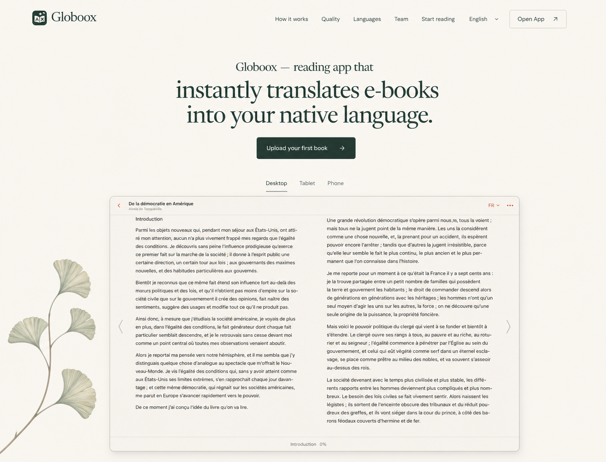
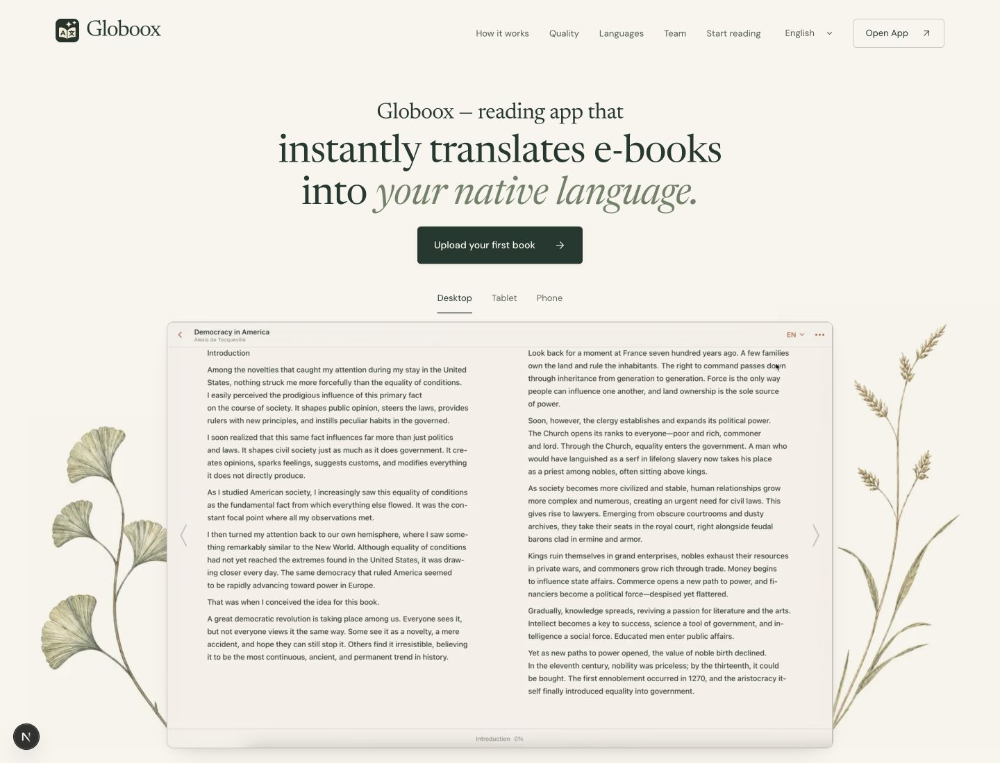

User-selected source and amended implementation, normalized to equal column widths. Intentional amendments: retain existing italic/sage type and actual video, add meadow grass, mirror ginkgo. The drawing stays full size across selected devices; only its anchoring, overlap and visible crop change.

